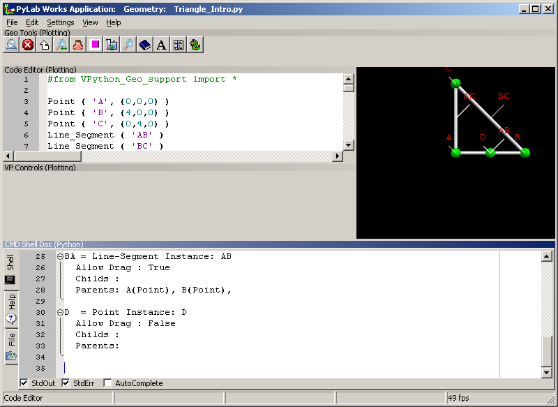
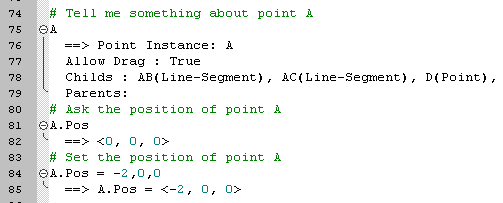

Geo Experiments  ( june 2009 )
( june 2009 )
Application Designer / Domain Expert / Control Designer / Core Developer
After starting PyLab_Works, you should see the followinf screen

- Geo Tools don't have any action other then printing 'PPPP['
- bug: StdOut / StdErr / Autocomplete checkboxes aren't saved
- VP Controls don't work correctly yet, these could display a measured value, like a distance between 2 points, that will actually follow the distance if you move one of the points
- I also saw some bugs in the help browser
In the interactive window at the bottom you can interact with the code, without changing the code:
